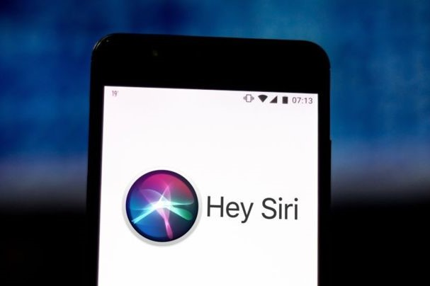
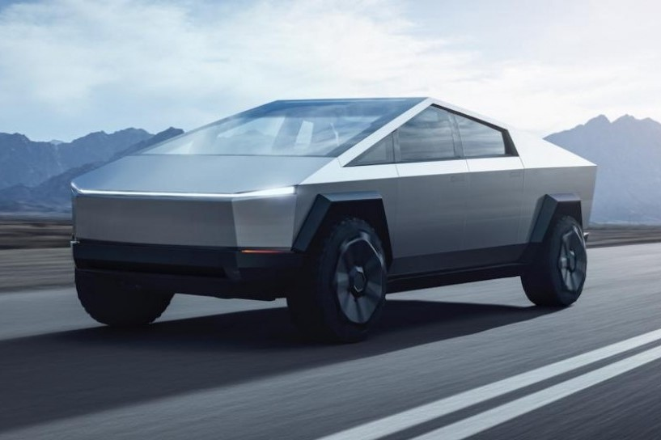
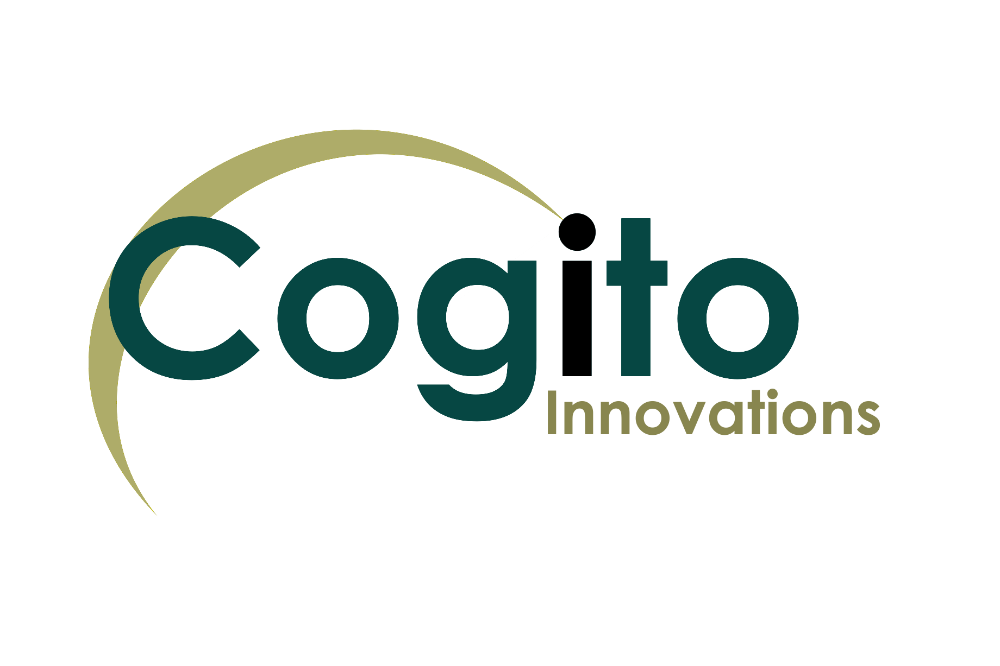

AI in our days.
Today, Artificial Intelligence is a very popular subject that is widely discussed in the technology and business circles. Many experts and industry analysts argue that AI or machine learning is the future – but if we look around, we are convinced that it’s not the future – it is the present.1. Siri
Siri is one of the most popular personal assistant offered by Apple in iPhone and iPad. The friendly female voice-activated assistant interacts with the user on a daily routine. She assists us to find information, get directions, send messages, make voice calls, open applications and add events to the calendar. Siri uses machine-learning technology in order to get smarter and capable-to-understand natural language questions and requests. It is surely one of the most iconic examples of machine learning abilities of gadgets.

2. Tesla
Not only smartphones but automobiles are also shifting towards Artificial Intelligence. Tesla is something you are missing if you are a car geek. This is one of the best automobiles available until now. The car has not only been able to achieve many accolades but also features like self-driving, predictive capabilities, and absolute technological innovation. If you are a technology geek and dreamt of owning a car like shown in Hollywood movies, Tesla is one you need in your garage. The car is getting smarter day by day through over the air updates.

3. Cogito
Cogito originally co-founded by Dr. Sandy and Joshua is one of the best examples of the behavioral version to improve the intelligence of customer support representatives, currently on the market. The company is a synthesis of machine learning and behavioral science to enhance customer collaboration for phone professionals. Cogito is applicable on millions of voice calls that take place on a daily basis. The AI solution analyzes the human voice and provides real-time guidance to enhance behavior.

4. Netflix
Netflix needs no introduction – it is a widely popular content-on-demand service that uses predictive technology to offer recommendations on the basis of consumers’ reaction, interests, choices, and behavior. The technology examines from a number of records to recommend movies based on your previous liking and reactions. It is turning more intelligent with each passing year. The only the drawback of this technology is that small movie go unnoticed while big films grow and propagate on the platform. But as I wrote earlier, it is still improving and learning to be more intelligent.
5. Pandora
Pandora is one of the most popular and highly demanded tech solutions that exist. It is also called the DNA of music. Depending on 400 musical characteristics, the team of expert musicians individually analyzes the song. The system is also good at recommending the track record for recommending songs that would never get noticed, despite people’s liking. Modern Perspective of Digital Customer Experience
6. Nest (Google)
Nest was one of the most famous and successful artificial intelligence startups and it was acquired by Google in 2014 for $3.2 billion. The Nest Learning Thermostat uses behavioral algorithms to save energy based on your behavior and schedule. It employs a very intelligent machine learning process that learns the temperature you like and programs itself in about a week. Moreover, it will automatically turn off to save energy, if nobody is at home. In fact, it is a combination of both – artificial intelligence as well as Bluetooth low-energy because some components of this solution will use BLE services and solutions.
7. Boxever
Boxever is a company that heavily relies on machine learning to enhance the customer experience in the travel industry and conveys micro-moments or experiences that can please the customers. Boxover significantly improves customer engagement through machine learning and Artificial Intelligence to rule the playing field, helping customers to find new ways and make memorable journeys.
8. Flying Drones
The flying drones are already shipping products to customers home – though on a test mode. They indicate a powerful machine learning system that can translate the environment into a 3D model through sensors and video cameras. The sensors and cameras are able to notice the position of the drones in the room by attaching them to the ceiling. Trajectory generation algorithm guides the drone on how and where to move. Using a Wi-Fi system, we can control the drones and use them for specific purposes – product delivery, video-making, or news reporting.

9. Echo
Echo was launched by Amazon, which is getting smarter and adding new features. It is a revolutionary product that can help you to search the web for information, schedule appointments, shop, control lights, switches, thermostats, answers questions, reads audiobooks, reports traffic and weather, gives info on local businesses, provides sports scores and schedules, and more using the Alexa Voice Service.
Conclusion
Artificial Intelligence is gaining popularity at a quicker pace; influencing the way we live, interact and improve customer experience. There is much more to come in the coming years with more improvements, development, and governance.